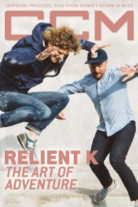

Relient K
 November 2001 HM |
 1 September 2016 CCM Digital |
Media coverage:
- Jul 2000 in HM "Punk Will Eat Itself", by David M Pogge
- Sep 2000 in 7ball "Bankshots: Relient K", by Thompson Brooks
- Nov 2000 in Campus Life "Meet...: Relient K", by Martin Cockroft
- Jun 2001 in CCM "On Tour: 328 Performance Hall, Nashville, TN", by Lucas W. Hendrickson
- Sep 2001 in CCM "College Boys", by Andy Argyrakis
- Nov 2001 in HM "Networking The Young", by Andy Argyrakis
- Jan 2002 in CCM "All Access: Relient K Exits Partnership With Abercrombie After Controversy Flares In Christian Circles", by Adam Woodroof
- Jan 2002 in CCM "On Tour: 328 Performance Hall, Nashville, TN", by Marcia Bartenhagen
- Feb 2002 in CCM "Story Behind the Song: My Girlfriend", by Steve Knight
- Mar 2003 in Christian Music Planet "Building The Perfect Punk Act (Instructions Included)", by Jenni Isaac
- May 2003 in HM "Hardnews: Junior Release", by Lee Haley
- May 2003 in Group "Ministry and Media: Am I Understood", by Bryan Belknap
- Mar 2004 in CCM "The Verdict Is In: 'Rock & Roll Is Here To Stay'", by Anthony DeBarros
- Mar 2004 in CCM "Standing Room Only: Newsong's Winter Jam", by Andy Argyrakis
- Jul 2004 in CCM "Insider: Studio Buzz"
- Sep 2004 in CCM "Insider: Road Warriors"
- Dec 2004 in CCM "The CCM Top 100: Relient K"
- Dec 2004 in CCM "The Real Special K", by David A. Jenison
- Jan 2005 in Relevant "Mmhmm Good", by Darren Philip
- Aug 2005 in CCM "By The Numbers: Relient K", by Gregory J. Rumburg
- Oct 2005 in CCM "List-O-Rama: The KIDS Are Alright", by Chris Well
- Jan 2006 in CCM "5 Questions With: Matthew Thissen (Relient K)"
- Jan 2006 in CCM "Standing Room Only: MxPx, Relient K", by Andy Argyrakis
- Mar 2006 in Ignite Your Faith "Classic(al) Christian Rock?"
- Apr 2006 in CCM "!Pop Punk", by Tony Shore
- Jun 2006 in Ignite Your Faith "Is Relient K OK?", by Mark Matlock
- Oct 2006 in CCM "List-O-Rama: Ooh, Scary: 5 Songs That Cast Out Fear", by Chris Well
- Feb 2007 in CCM "Poets, Preachers & Prophets", by John J. Thompson
- Mar 2007 in HM "Matt Thissen Pimps Out Relient K", by Brian Quincy Newcomb
- Mar 2007 in CCM "Something So Right", by John J. Thompson
- Mar 2007 in CCM "May the Horse Pill Be With You", by Jay Swartzendruber
- Mar 2007 in CCM "From the Editor: How Relient K Won By Surrendering", by Jay Swartzendruber
- Jul 2007 in Group "Culture: Ministry and Media: Relient K", by Scott Firestone IV
- Jan 2008 in CCM "Story Behind the Song: Give Until There's Nothing Left", by Matthew Thissen
- Sep 2008 in HM "Hardnews: Quick & Concise: Relient K"
- Nov 2009 in HM "Don't Let Matt Thiessen Fool You", by Kelly Kettering
- Sep 2012 in HM "Live Report: August 5, Austin, TX", by Doug Van Pelt
- Jul 2013 in HM "Columns: Remembering Relient K"
- Jul 2013 in HM "The Jump: The Hook-Men Cometh", by Melissa Sanchez
- Sep 2013 in CCM Digital "Spotlight: Relient K", by Andy Argyrakis
- 15 Jun 2014 in CCM Digital "Gotee Records Celebrates 20 Years", by Matt Conner
- 1 Sep 2016 in CCM Digital "The Art of Adventure", by Andrew Greer
Albums & reviews:
1998: All Work And No Play
2000: Relient K
- May 2000 in YouthWorker, by Dave Urbanski
- May 2000 in CBA Marketplace, by Sean Taylor
- Jul 2000 in CCM, by Chris McNeece
- Jul 2000 in HM, by Tim McCready
2001: The Anatomy Of The Tongue In Cheek
- Sep 2001 in HM, by Bethany Reed
- Sep 2001 in CCM, by Lou Carlozo
- Nov 2001 in Christian Single, by Lou Carlozo
2003: Two Lefts Don't Make A Right...But Three Do
- Mar 2003 in CBA Marketplace, by Rhonda Owens
- Mar 2003 in CCM, by David McCreary
- 2003 in Cornerstone, by Christopher Wiitala
- Apr 2003 in Nor'Easter, by Chris Gatto
- May 2003 in YouthWorker, by Dave Urbanski
- May 2003 in HM, by Kriss Stress
- May 2003 in Christian Music Planet, by Jeremy Preece
2004: mmHmm
- Dec 2004 in CCM, by Christina Farris
- Jan 2005 in YouthWorker, by Dave Urbanski
- Jan 2005 in HM, by Doug Van Pelt
- Jun 2005 in Living With Teenagers, by Joy Fisher
2007: Five Score & Seven Years Ago
- Mar 2007 in HM, by Andrew Schwab
- Mar 2007 in YouthWorker
- Mar 2007 in CCM, by Tony Shore
- Mar 2007 in Christian Music Planet, by Andrew Schwab
- Mar 2007 in Relevant, by Kurt Heller
- Apr 2007 in Christian Single, by Andy Argyrakis
- 2007 in Christian Rock Report, by Emily Taylor
2009: Forget And Not Slow Down
- Nov 2009 in HM, by Dan MacIntosh
- Mar 2010 in Living With Teenagers, by Randy Williams
2010: The First Three Gears (2000-2003)
Award Summary (Nominations / Wins)
Dove Awards- 2001 Dove Awards
- Short Form Music Video: "My Girlfriend"
- Modern Rock Album: Two Lefts Don't Make A Right...But Three Do
- Modern Rock Recorded Song: "I Am Understood"
- Recorded Music Packaging: mmHmm
- Short Form Music Video: "Be My Escape"
- Rock Album: mmHmm
- Pop/Contemporary Recorded Song: "Be My Escape"
- Rock Recorded Song: "Who I Am Hates Who I've Been"
- Rock Recorded Song: "I Need You"
- Recorded Music Packaging: Forget And Not Slow Down
- Recorded Music Packaging: Collapsible Lung
- 2003 Grammy Awards
- Best Rock Gospel Album: Two Lefts Don't Make A Right...But Three Do
Books about Relient K
- "Relient K" in The Encyclopedia of Contemporary Christian Music (Mark Allan Powell, 2002).
© 2011 CMnexus. Last updated May 2025. Contact: editor -AT- cmnexus -DØT- org